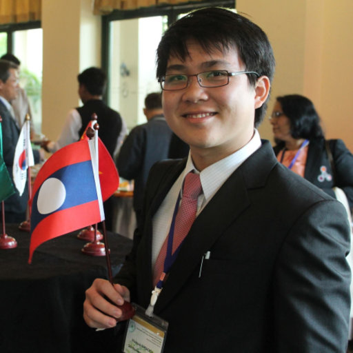

Education
Ph.D in Sustainable Development from Graduate School of Engineering/The University of Troyes, Troyes, France and Faculty of technology, policy and management (TPM)/ TU delft 09/2009 – 09/2013
- M.Sc in Industrial Ecology from Norwegian University of Science and Technology, Trondheim, Norway and Ecole Centrale de Nantes, Nantes, France 09/2006 - 06/2008
- B.Eng in Engineering from Ecole centrale de Nantes 09/2004 – 06/2006
Preparatory school from Lycée Louis le Grand, Paris, France.09/2001-06/2004
Employment
- 06/2017 ~ Now | Senior Researcher, Ritsumeikan University, Shiga, Japan
- 06/2015 - 06/2017 | Assistant Researcher, Ritsumeikan University, Shiga, Japan
- 12/2013 - 12/2014 | JSPS Researcher, Ritsumeikan University,Shiga, Japan
- 09/2009 - 09/2012 | Phd candidate and Environmental analyst at itnovem
Publications
Journal Articles
2020
- S.M.R. Dente, C. Kayo, C. Aoki-Suzuki, D. Tanaka, and S. Hashimoto: Life cycle environmental impact assessment of biomass materials in Japan, Journal of Cleaner Production, Vol.257,12038875 (2020.6) (in English) (https://www.sciencedirect.com/science/article/pii/S0959652620304352?via%3Dihub) #Download
- A.N. Azimi,S.M.R. Dente, and S. Hashimoto: Social life-cycle assessment of household waste management system in Kabul City, Sustainability (2020.4) (in English).
2019
- C. Kayo, –S.M.R. Dente–, C. Aoki-Suzuki, D. Tanaka, and S. Hashimoto: Environmental impact assessment of wood use in Japan through 2050 using Material Flow Analysis and Life Cycle Assessment,Journal of Industrial Ecology, Vol.23, No.3, p.635-648 (2019.6) (in English)(https://onlinelibrary.wiley.com/doi/abs/10.1111/jiec.12766)
- –S.M.R Dente–, C, Aoki-Suzuki, D. Tanaka, S. Murakami and S. Hashimoto: Effects of a new supply chain decomposition framework on the material life cycle greenhouse gas emissions - the Japanese case, Resources, Conservation and Recycling, Vol.143, p.273-281 (2019.4) (in English) (https://www.sciencedirect.com/science/article/abs/pii/S0921344918303604?via%3Dihub)
Conference Proceedings
- Kamrul Islam, Xaysackda Vilaysouk, Shinsuke Murakami: Environmental impacts of copper mining in Laos: Application of remote sensing and life cycle assessment, 第１６回「資源・素材・環境」技術と研究の交流会, Tokyo, Japan; 08/2019
- Kamrul Islam, Xaysackda Vilaysouk, Shinsuke Murakami: Integrating remote sensing and life cycle assessment to quantify the environmental impacts of mining: The case of Lao PDR, 10th International Conference on Industrial Ecology, Tsinghua University, Beijing, China; 07/2019
- Xaysackda Vilaysouk, Alessio Miatto, Heinz Schandl, Shinsuke Murakami: Material Stock of Developing Nation, Lao PDR, 10th International Conference on Industrial Ecology, Tsinghua University, Beijing, China; 07/2019
- Kamrul Islam, Xaysackda Vilaysouk, Shinsuke Murakami: Exploring the relationship between total in-use stock and satellite nighttime light data: A case study from Lao PDR, The 66th Conference of the Remote Sensing Society of Japan, Toyko, Japan; 07/2019
- Xaysackda Vilaysouk, Kamrul Islam, James West, Heinz Schandl, Shinsuke Murakami: Environmental impacts of Open-pit Copper mining in Lao PDR: A Life Cycle Assessment, the EcoBalance 2018, Tokyo, Japan; 10/2018
- Xaysackda Vilaysouk, Shinsuke Murakami, Heinz Schandl : The Industrial Ecology Knowledge to support Sustainable Development Goals in ASEAN: Opportunities and challenges. The Gordon Research Conference on Industrial Ecology, Les Diablerets, Switzerland; 05/2018
- Xaysackda Vilaysouk, Shinsuke Murakami, Heinz Schandl : Assessing a Physical Dimension of Lao Economy through Material Flow Analysis. The 9th biennial conference of the International Society for Industrial Ecology (ISIE) and the 25th annual conference of the International Symposium on Sustainable Systems and Technology (ISSST), Chicago, USA; 07/2017
- Xaysackda Vilaysouk, Shinsuke Murakami: Material flow analysis for sustainable resource use in Lao PDR: the potentials and challenges. the International Society for Industrial Ecology (ISIE) 12th Socio-Economic Metabolism section conference and 5th Asia-Pacific conference, Nagoya University, Nagoya, Japan; 09/2016
- Xaysackda Vilaysouk, Sandhya Babel: Co-Benefits of Improved Municipal Solid Waste Management in Luangprabang, Lao PDR. the International Conference on Solid Waste 2015: Knowledge Transfer for Sustainable Resource Management, Hong Kong Convention and Exhibition Centre, Hong Kong SAR, China; 05/2015, DOI:10.13140/RG.2.1.2162.0565
- Xaysackda Vilaysouk, Sandhya Babel: Estimation of Greenhouse Gas Emission from Landfill in Luangprabang, Lao PDR. the 8th GMSARN International Conference 2013 on “Green Growth in GMS: Energy, Environment and Social Issues, Mandalay, Burma; 12/2013, DOI:10.13140/2.1.3358.8000
- Xaysackda Vilaysouk, Sandhya Babel: Comparison of Potential Greenhouse Gas Emission from Municipal Solid Waste Disposal Site in Savannakhet and Champasak, Lao PDR. The 6th ACEC and The 6th AEEC, Bangkok, Thailand; 11/2013, DOI:10.13140/2.1.5062.7368